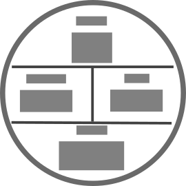

Incorporating Visual Design and Product Personalities
Now that we have established our workflow and interaction paradigms, we can focus on incorporating visual design. Your visual design needs to combine both your brand and the personality of the product you are designing for.
Product Personality
Garmin products have different personalities, depending on the target audience of that product, the core usage of the product, the graphics and industrial design of the product and the hardware and technology used in the product.
Screen Technology
Many Garmin products use a screen technology known as Memory in Pixel (MIP). MIP displays are very low power. They depend on reflecting light, so they look brightest outdoors. The display technology has a limited color palette: Some offer up to 64 colors, while others offer only eight or even black and white.
Most Garmin products using MIP displays offer a 64-color palette:
| 0xFFFFFF | 0xFFFFAA | 0xFFFF55 | 0xFFFF00 | 0xFFAAFF | 0xFFAAAA | 0xFFAA55 | 0xFFAA00 |
| 0xFF55FF | 0xFF55AA | 0xFF5555 | 0xFF5500 | 0xFF00FF | 0xFF00AA | 0xFF0055 | 0xFF0000 |
| 0xAAFFFF | 0xAAFFAA | 0xAAFF55 | 0xAAFF00 | 0xAAAAFF | 0xAAAAAA | 0xAAAA55 | 0xAAAA00 |
| 0xAA55FF | 0xAA55AA | 0xAA5555 | 0xAA5500 | 0xAA00FF | 0xAA00AA | 0xAA0055 | 0xAA0000 |
| 0x55FFFF | 0x55FFAA | 0x55FF55 | 0x55FF00 | 0x55AAFF | 0x55AAAA | 0x55AA55 | 0x55AA00 |
| 0x5555FF | 0x5555AA | 0x555555 | 0x555500 | 0x5500FF | 0x5500AA | 0x550055 | 0x550000 |
| 0x00FFFF | 0x00FFAA | 0x00FF55 | 0x00FF00 | 0x00AAFF | 0x00AAAA | 0x00AA55 | 0x00AA00 |
| 0x0055FF | 0x0055AA | 0x005555 | 0x005500 | 0x0000FF | 0x0000AA | 0x000055 | 0x000000 |
The Forerunner 45 and 55 use an eight-color palette:
| 0xFFFFFF | 0xFFFF00 | 0xFF00FF | 0xFF0000 | 0x00FFFF | 0x00FF00 | 0x0000FF | 0x000000 |
The other common screen technology for Garmin devices is LCD or AMOLED displays. These offer many more colors and can look vibrant, but they also use more power in outdoor use cases.
Visual Theme
Different Garmin devices have different visual themes. Some devices go for dark text on light backgrounds, while others use a light text on a dark background:
There can be reasons besides aesthetics for these decisions. On MIP devices, dark on light is context-specific and is used predominately during activities to provide better contrast. Because the screen is reflective, it achieves the best contrast in outdoor environments with a white background and black text.
On Edge products, the visual theme changes based on the time of day. These devices use a white background and black text during daylight hours for best contrast. At night, they have a black background and white text to be easier on the eyes in low-light use.
Devices with AMOLED or LCD screens use a light text on a black background. By having a dark visual theme, devices with AMOLED displays can extend battery life while still incorporating beautiful imagery into the user interface.
Example
Light on Dark

Dark on Light
Typography
There are two kinds of system fonts on a Garmin device: the text font and the number font. The text font should be used for textual data and labels, while the number font is used for numerical data. The system fonts that come with the device have been tested for readability for the device and should be used whenever possible.
Connect IQ allows developers to import a typeface into an app. These typefaces only allow for one-point size to be imported. Custom typefaces should be used to give a visual accent or to add a branding element to your app.
Headers and Footers
Within the app, it is common to have a header portion at the top of the view. The header can have a small string of text or iconography to give the user context as to where they are within the application. On MIP products with fewer colors, it is common for the header to be a solid color. On LCD or AMOLED displays, the header should be a gradient that fades into black.
Imagery
On devices with LCD or AMOLED screens, subtle imagery on backgrounds can add a visual accent to pages.
Best Practices
When designing across multiple products, show the same content regardless of display size. Rely on standard patterns and system fonts for content to scale appropriately to the display size and resolution.
Put the most Important information front and center. Device applications are not meant to be the focus of the user's attention. Clearly place the relevant information on screen, so the user can return to what they need to do quickly.
If you can only choose one, focus on light-on-dark themes. A light-on-dark theme will still look acceptable on devices with a default dark-on light display. On the other hand, a dark-on-light them will look out of place on an AMOLED display. Dark-on-light themes are best reserved for apps intended for outdoor activities on MIP displays.
Identify a theme color that speaks to your brand, and use that in your iconography and headers.
The system fonts have been tested for readability, but you will have varying typeface sizes across devices. Keep any text on device short, or have it flow across multiple pages.